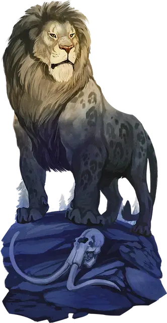

Пятнистый лев
Spotted Lion
Огромный Зверь, без мировоззрения

Класс Доспеха 15 (природный доспех)
Хиты 66 (7к12 + 21)
Скорость 60 футов
| мод | спас | ||
|---|---|---|---|
| СИЛ | 23 | +6 | +6 |
| ЛОВ | 14 | +2 | +2 |
| ТЕЛ | 17 | +3 | +3 |
| мод | спас | ||
|---|---|---|---|
| ИНТ | 5 | −3 | −3 |
| МДР | 13 | +1 | +1 |
| ХАР | 10 | +0 | +0 |
Навыки Восприятие +5, Скрытность +6
Чувства тёмное зрение 60 футов, пассивное Восприятие 15
Опасность 3 (700 опыта)
Бонус мастерства +2
Особенности
Тактика стаи. Лев совершает с преимуществом броски атаки по существу, если как минимум один союзник льва находится в пределах 5 футов от этого существа, и этот союзник дееспособен.
Действия
Разрывание. Рукопашная атака оружием: +8 к попаданию, досягаемость 10 футов, одна цель. Попадание: 15 (2к8 + 6) колющего урона. Если лев переместится как минимум на 20 футов по прямой к существу, то перед попаданием по ней атаки, цель должна преуспеть в спасброске Силы Сл 16, иначе будет сбита с ног. Если цель сбита с ног, лев может бонусным действием совершить по ней одну атаку Разрыванием.
Описание
Когда дело доходит до проникновения в дома великанов, я должен признать, что пятнистые львы в некотором смысле предпочтительнее, скажем, лютых волков или пещерных медведей. В частности, если они хорошо накормлены, они с большей вероятностью потянутся и зевнут, чем поднимут тревогу, когда заметят вас.
-Бигби
Пятнистый лев примерно в два раза больше обычного льва, у него темная шерсть и грива, испещренные пятнами угольного цвета. Пятнистые львы собираются в прайды, чтобы охотиться на огромную добычу - от гигантских лосей до мамонтов. Каменные и облачные великаны часто держат этих массивных зверей в качестве домашних животных и компаньонов по охоте.